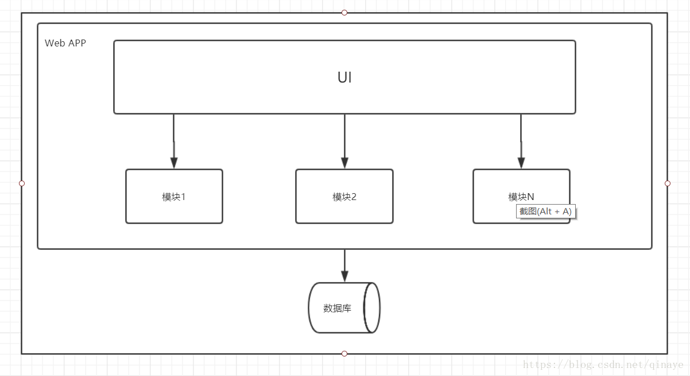
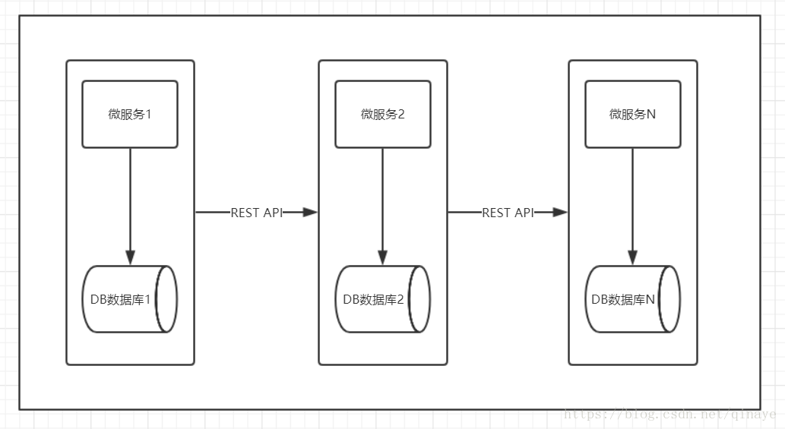

1.说到隔离、熔断、降级，最出名的就是 Netflix 开源的 Hystrix 组件，Hystix官方对它描述为：Hystrix是一个延迟和容错库，旨在隔离远程系统、服务和第三方库，阻止级联故障，在复杂系统中实现恢复能力。
2.下图应用从单块到微服务，系统被拆分为多个，那么产生了个问题，就是微服务的可用性，假设单块应用的可用性是 99.99%，如果被拆分为30个微服务后，总体的可用性是多少，答案是 99.7%，每月2小时宕机时间，实际情况可能更长，30个微服务可用性算法是 99.99%的30阶乘（30个99.99%相乘）。

1. 优点
便于共享：单个归档文件包含所有功能，便于在团队之间以及不同的部署阶段之间共享。
易于测试：单体应用一旦部署，所有的服务或特性就都可以使用了，这简化了测试过程，因为没有额外的依赖，每项测试都可以在部署完成后立刻开始。
易于部署：只需将单个归档文件复制到单个目录下。
2. 缺点
复杂性高：由于是单个归档文件，所以整个项目文件包含的模块非常多，导致模块的边界模糊、依赖关系不清晰、代码的质量参差不齐，混乱的堆在一起，使得整个项目非常复杂。以致每次修改代码，都非常小心，可能添加一个简单的功能，或者修改一个Bug都会带来隐藏的缺陷。
技术债务：随着时间的推移、需求的变更和技术人员的更替，会逐渐形成应用程序的技术债务，并且越积越多。
扩展能力受限：单体应用只能作为一个整体进行扩展，无法根据业务模块的需要进行伸缩。
阻碍技术创新：对于单体应用来说，技术是在开发之前经过慎重评估后选定的，每个团队成员都必须使用相同的开发语言、持久化存储及消息系统。
微服务架构风格是一种将一个单一应用程序开发为一组小型服务的方法，每个服务运行在自己的进程中，服务间通信采用轻量级通信机制。这些服务围绕业务能力构建并且可通过全自动部署机制独立部署。这些服务共用一个最小型的集中式的管理，服务可用不同的语言开发，使用不同的数据存储技术。

1. 优点
易于开发和维护：一个微服务只会关注一个特定的业务功能，所以业务清晰、代码量较少。开发和维护单个微服务相对简单。
单个微服务启动较快
局部修改容易部署：单体应用只要有修改，就得重新部署整个应用。微服务解决了这样的问题。一般来说，对某个微服务进行修改，只需要重新部署这个服务即可。
技术栈不受限制：在微服务架构中，可以结合项目业务及团队的特点，合理的选择技术栈。
按需伸缩：可根据需求，实现细粒度的扩展。
2. 缺点
运维要求高：更多的服务意味着要投入更多的运维。
分布式固有的复杂性：使用微服务构建的是分布式系统。对于一个分布式系统，系统容错、网络延迟、分布式事务等都会带来巨大的问题。
接口调整成本高：微服务之间通过接口进行通信。如果修改某一个微服务的API，可能所有用到这个接口的微服务都需要进行调整。
当用户请求 A、P、H、I 四个服务获取数据时，在正常流量下系统稳定运行，如果某天系统进来大量流量，其中服务 I 出现 CPU、内存占用过高等问题，结果导致服务 I 出现延迟、响应过慢，随着请求的持续增加，服务 I 承受不住压力导致内部错误或资源耗尽，一直不响应，此时更糟糕的是其他服务对 I 有依赖，那么这些依赖 I 的服务一直等待 I 的响应，也会出现请求堆积、资源占用，慢慢扩散到所有微服务，引发雪崩效应。
隔离：将请求封装在HystrixCommand中，然后这些请求在一个独立的线程中执行，每个依赖服务维护一个小的线程池（或信号量），在调用失败或超时的情况下可以断开依赖调用或者返回指定逻辑
熔断：当HystrixCommand请求后端服务失败数量超过一定比例(默认50%), 断路器会切换到开路状态(Open). 这时所有请求会直接失败而不会发送到后端服务，断路器保持在开路状态一段时间后(默认5秒)，自动切换到半开路状态(HALF-OPEN)，这时会判断下一次请求的返回情况， 如果请求成功, 断路器切回闭路状态(CLOSED)，否则重新切换到开路状态(OPEN)
降级：服务降级是指当请求后端服务出现异常的时候, 可以使用fallback方法返回的值
1.主动超时：Http请求主动设置一个超时时间，超时就直接返回，不会造成服务堆积
2.限流：限制最大并发数
3.熔断：当错误数超过阈值时快速失败，不调用后端服务，同时隔一定时间放几个请求去重试后端服务是否能正常调用，如果成功则关闭熔断状态，失败则继续快速失败，直接返回。（此处有个重试，重试就是弹性恢复的能力）
4.隔离：把每个依赖或调用的服务都隔离开来，防止级联失败引起整体服务不可用
5.降级：服务失败或异常后，返回指定的默认信息